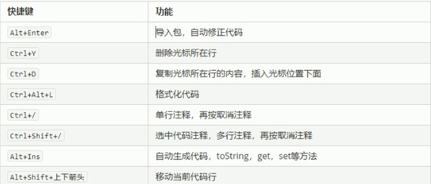

首页
分享
IDEA超级实用的几个快捷键
原文出处:本文由博客园博主喜欢学习的坏学生提供。
原文连接:https://www.cnblogs.com/gz18221/p/11968252.html
最近开始使用IDEA，突然发现的比较的实用的几个快捷键
这些快捷键用的好的话真的可以提升很多效率

还有一些比较简单的快捷键，相信大家都会
Ctrl+X：剪切
Ctrl+C：复制
Ctrl+V：粘贴
Ctrl+Shift+上下箭头：注意它和图片里面移动代码快捷键相识，自己体会